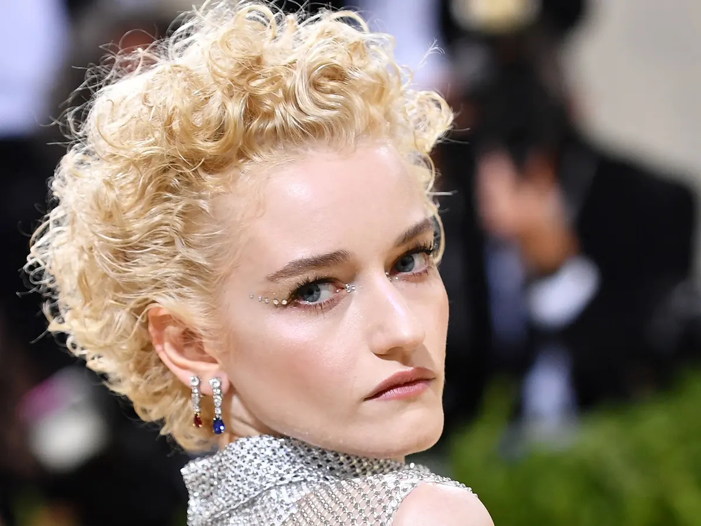
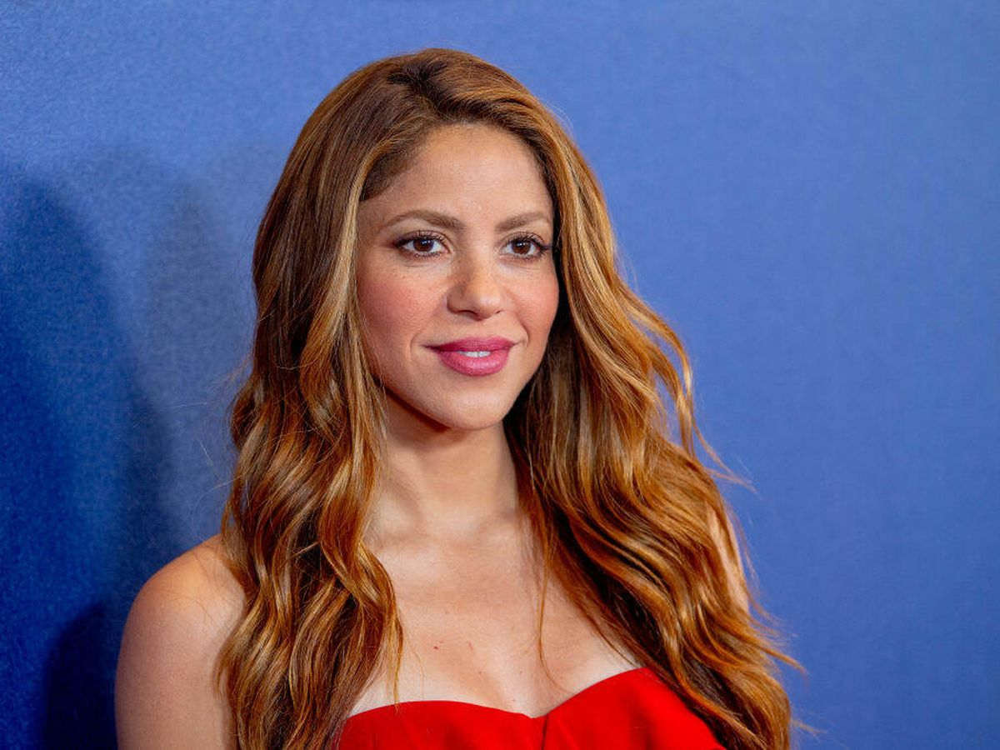
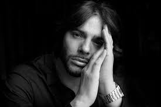
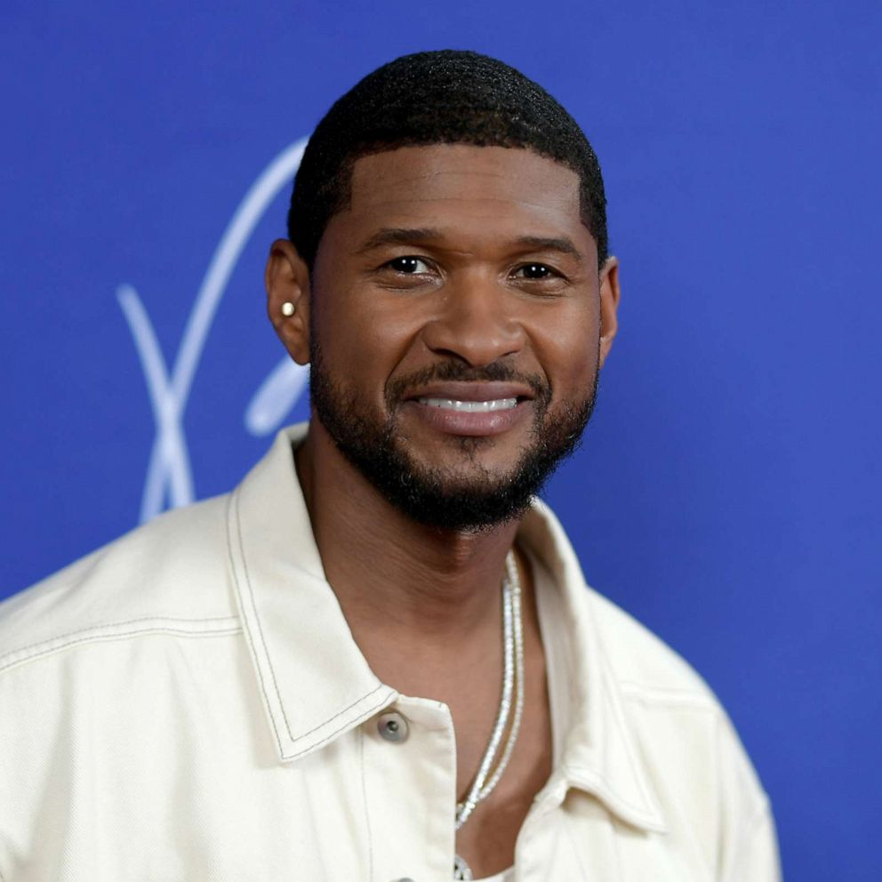

Top Dancers in the world
"Top 5 in the league"
Top in the league
#1 Michael Jackson
Michael Joseph Jackson is one of the popular dance icons and pop stars of the 1980s.
He was not only a dancer but singer and songwriter. Jackson amazed the audience with his video performance,
live performance, and with his dance move, especially "moonwalk," which gave the name and robot style. He is the most music awarded artist in history.

#2 Madonna
Madonna Louise Ciccone is an American actress, singer, songwriter, recording artist, and dancer. Her debut album "Madonna", "true blue" "like a virgin" were the best sellers.
She is known as the best-selling female recording artist of all time by Guinness world record.

#3 Shakira
Shakira Isabel Mebarak Ripoll is popularly known as Shakira, is a Colombian singer, songwriter, dancer, philanthropist, producer, and actress. She is known as the queen of Latin music. Shakira made her debut at the age of 13. She sold over 80 million records and is also known as the world's best-selling music artist.

#4 Joaquin Cortes
Joaquin Cortes is a Spanish classically trained ballet, flamenco, and contemporary dancer. He was good at dancing from his childhood but took lessons. Cortes performed in New York in the Metropolitan Opera House. He became a principal solo ballet dancer of Spanish national ballet. He is recognized for his stamina and phenomenal athleticism.

#5 "Usher"
Usher Raymond is an American dancer, singer, songwriter, actor, and businessman. His first debut album was Usher (1994), who got fame in the late 1990s. He performs dance and singing and is acknowledged for his dance moves and borrows from past movement styles. One of his signature move of his is called "slide guide". Usher has won numerous awards for his singing.
